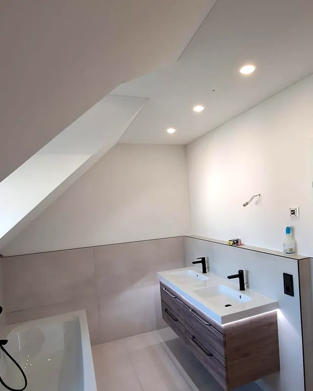

Trockenbau & Kernsanierung in AugsburgTrockenbau, der sitzt.
Trockenbau, Dachausbau und Kernsanierung, schlüsselfertig aus einer Hand. Für Privat, Gewerbe und Hausverwaltungen in Augsburg und 100 km Umkreis.


- Seit 2014
- Erfahrung im Trockenbau
- 5,0 von 5
- bei 32 Bewertungen
- 100 km
- Umkreis um Augsburg
- 0 €
- kostet die Besichtigung
Leistungen
Drei Dinge machen wir am häufigsten.


Außerdem
Alles, was trocken gebaut wird.
Vom einzelnen Durchbruch im Altbau bis zum kompletten Büroausbau. Mit geprüften Systemen der bekannten Plattenhersteller.
Abgehängte Decken
Glatte Decken unter Altbau- oder Betondecken, mit Platz für Leitungen, Lüftung und Einbauleuchten.
CD-Profil · Direktabhänger · NoniusBrandschutz
Brandwände, Decken, Schächte und Stahlträgerbekleidungen bis F90 und darüber. Dazu Abschottungen für Kabel und Rohre, geschult bei ZAPP-ZIMMERMANN.
F30 · F60 · F90 und höherSchall- und Akustikdecken
Ruhe zwischen Räumen und bessere Sprachverständlichkeit in Büro, Praxis und Gastronomie.
Lochplatten · MineralfaserVorsatzschalen und Installationswände
Leitungen verschwinden hinter der Wand, alte Mauern werden gerade. Ideal für Bad und Küche.
GKBI imprägniert für FeuchträumeSpachtel- und Oberflächenarbeiten
Fugen, Kanten und Flächen streichfertig, von der Grundverspachtelung bis Q4.
Q1 · Q2 · Q3 · Q4Böden und Trockenestrich
Neue Böden und schnell belegbarer Trockenestrich ohne Trocknungszeit. Gut für Holzbalkendecken im Altbau.
Unterböden · Trockenestrich · BelägeMaler- und Glättarbeiten
Streichen, Spachteln und Glätten, damit die Räume nach dem Umbau fertig sind.
Innenanstrich · Q3/Q4-FlächenFassade
Auch außen aus einer Hand: Arbeiten an der Fassade im Rahmen einer Sanierung.
Sanierung · Anstrich
Projekte
Aus unseren Baustellen.
Echte Aufträge, vom Ständerwerk bis zur fertigen Fläche. Zum Vergrößern antippen.
Mehr Bilder zeigen wir auf Instagram @atstrockenbau
Bewertungen
Was Kunden sagen.
32 Bewertungen auf Google, MyHammer und Trustlocal. Top Score 2025 und 2026 auf Trustlocal.
„Das Trockenbau-Team hat bei uns hervorragende Arbeit geleistet.“
„Herausragende Arbeit und absolute Zuverlässigkeit!“
„Super Arbeit, auch die kniffligere Seite mit 2 Dachschrägen wurde korrekt abgehängt.“
„Wir hatten einen Plan von einer Innendesignerin und die Firma ATS hat sich sehr präzise an den Plan gehalten …“
„Klasse Arbeit von Milos bei der Dämmung unseres Dachbodens, freundliches Team, gutes Preis-/Leistungsverhältnis.“
„Zeitplan und Preis wurde wie besprochen eingehalten“
Auszüge aus öffentlichen Bewertungen, gekürzt, Namen abgekürzt. Gesamtwertung laut Trustlocal, Stand November 2026. Wir prüfen nicht selbst, ob jede Bewertung von einem Kunden stammt, der die Leistung genutzt hat.
Ablauf
Von der Anfrage bis zur Abnahme.
- 01
Anfrage
Sie beschreiben Ihr Vorhaben per Formular, Telefon oder WhatsApp, gern mit Fotos oder Grundriss.
- 02
Besichtigung
Wir kommen kostenlos vor Ort, nehmen Maß und klären Details wie Brand- oder Schallschutz.
- 03
Angebot
Sie erhalten ein schriftliches Angebot mit klarer Leistungsbeschreibung und Termin.
- 04
Ausführung
Sauber und termingerecht, mit Schutz von Boden und Möbeln. Abfall nehmen wir mit.
- 05
Abnahme
Gemeinsame Begehung und Übergabe. Kleine Aufträge rechnen wir danach ab, größere in Abschlägen.
Einsatzgebiet
Augsburg und 100 km Umkreis.
Von Augsburg aus arbeiten wir in ganz Schwaben und weiten Teilen Oberbayerns.
Augsburg, Friedberg, Königsbrunn, München, Dachau, Fürstenfeldbruck, Starnberg, Freising, Ingolstadt, Neuburg a. d. Donau, Schrobenhausen, Donauwörth, Dillingen, Günzburg, Ulm / Neu-Ulm, Landsberg am Lech, Mindelheim, Kaufbeuren, Memmingen, Kempten und Weilheim.
Häufige Fragen
Gut zu wissen.
Fragen zu einer bestimmten Leistung beantworten wir auf den Seiten Trockenbau, Dachausbau und Kernsanierung.
Was kostet die Besichtigung?
Nichts. Wir kommen kostenlos zu Ihnen, nehmen Maß und besprechen, was Sie vorhaben. Danach erhalten Sie ein schriftliches Angebot, in dem jede Position nachvollziehbar aufgeführt ist.
Machen Sie auch Komplettsanierungen schlüsselfertig?
Ja. Vom Abbruch und Abtransport über Wände, Decken und Böden bis zu Malerarbeiten und Fassade. Elektro und Sanitär übernehmen unsere Partner-Fachbetriebe, abgestimmt durch uns. Sie haben einen Ansprechpartner für alles.
Arbeiten Sie auch für Firmen und Hausverwaltungen?
Ja. Wir arbeiten für Privatkunden, Firmen und Hausverwaltungen.
Wie weit fahren Sie?
Wir arbeiten in Augsburg und im Umkreis von rund 100 km, also in ganz Schwaben und weiten Teilen Oberbayerns bis Ulm, München, Ingolstadt und ins Allgäu.
Wie wird abgerechnet?
Kleinere Aufträge rechnen wir nach Fertigstellung ab. Bei größeren Projekten stellen wir Abschlagsrechnungen nach Baufortschritt.
Wie schnell melden Sie sich?
Innerhalb von zwei Werktagen, oft schon am selben Tag. Am schnellsten erreichen Sie uns per Telefon oder WhatsApp.
Kontakt
Erzählen Sie uns von Ihrem Projekt.
Wir melden uns innerhalb von zwei Werktagen, oft früher, und vereinbaren eine kostenlose Besichtigung.
- Telefon
- 0176 24142472
- Nachricht schreiben
- info@atstrockenbau.com
- Anschrift
- Droste-Hülshoff-Straße 26
86157 Augsburg - Erreichbar
- Mo–Fr 07:00–17:00 Uhr